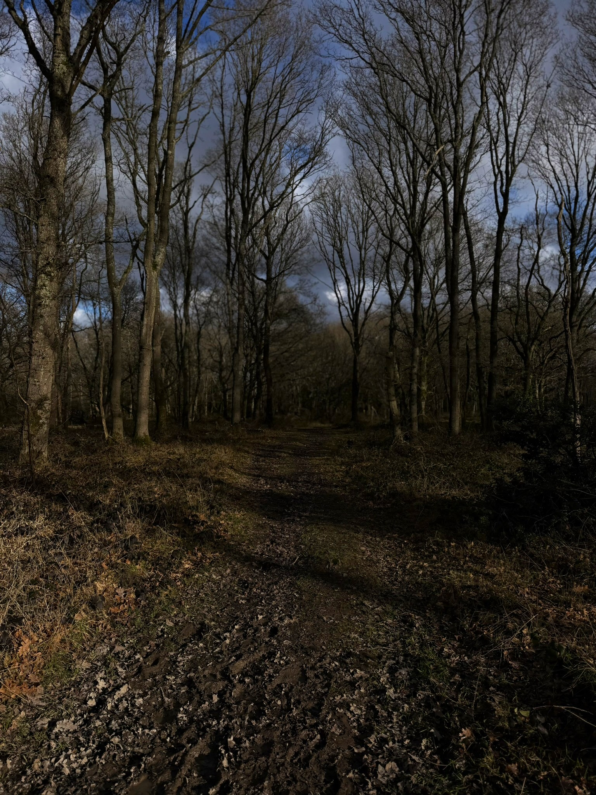

Bartley Heath is part of Hook Common and Bartley Heath, a 122-hectare Site of Special Scientific Interest. Historic maps show the area as Hook Common — the name "Bartley Heath" first appears in Greenwood's 1826 map of Hampshire, distinguishing this part of the common from nearby Butter Wood. The name may derive from Old English beorc-leah (birch wood or clearing), a common place name element describing areas with birch trees, though the specific origin remains uncertain. Together, these are surviving fragments of an extensive series of common lands that once overlay London Clay, Plateau Gravels, Valley Gravel, and Sand on the southern margin of the Thames Basin. What remains is rare: open wet heath, a habitat that has become scarce across southern England.
The Name Evolution: From Hook Common to Bartley Heath
Compare these historic maps: the earlier OS survey shows only "Hook Common," while Greenwood's 1826 map introduced "Bartley Heath" as a distinct name.
OS Old Series, 1810s–1850s — Shows "Hook Common" and "Butter Wood" without distinction.
Ordnance Survey, First Edition.
Greenwood's Map, 1826 — First known map to name "Bartley Heath" as a distinct area.
C. & J. Greenwood, Hampshire survey.
The emergence of "Bartley Heath" as a name coincides with the enclosure period, when large commons were being divided and mapped with greater precision. By the late 19th century, both names were in common use.
DesignationSSSI
Area122.2 ha
Notified29 Oct 1991
Managed ByHampshire Wildlife Trust

Silver birch woodland at Bartley Heath — the trees that may have given the site its name from Old English beorc-leah (birch wood). The secondary woodland has grown up on former heathland since grazing ceased at the turn of the 20th century.
From Common Land to Conservation
Hook Common and Bartley Heath are what's left of a once-extensive patchwork of common lands on the Thames Basin's southern edge. For centuries, these commons were worked land — grazed, cut for fuel, and managed by local people exercising common rights. The constant low-level disturbance kept the landscape open: heather-dominated heath punctuated by gorse and birch scrub, rather than the dense woodland that would naturally reclaim this ground.
Grazing ceased at the turn of the 20th century. Without animals to keep the scrub in check, birch and oak woodland began advancing across the open heath. This pattern repeated across southern England as traditional commoning fell away — heathland shrinking, fragmenting, becoming isolated pockets in an increasingly wooded or developed landscape.
By 1991, what remained was significant enough to warrant formal protection. The site was notified as an SSSI on 29 October 1991 and confirmed on 7 May 1992, recognizing its value for extensive areas of open wet heath — a habitat type that had become rare in the Thames Basin.
(Natural England)
Part of the site is now owned and managed as a nature reserve by the Hampshire and Isle of Wight Wildlife Trust, which has reintroduced grazing using rare breed cattle and semi-wild Exmoor and New Forest ponies to restore the former heathland character.
What is a Site of Special Scientific Interest?
An SSSI is a formal conservation designation in the UK, protecting areas with special wildlife, geological, or physiographical features. Hook Common and Bartley Heath was designated under the Wildlife and Countryside Act 1981, recognizing it as one of the few surviving examples of Thames Basin wet heath.
What Makes It Special
The heathland here is dominated by purple moor-grass, cross-leaved heath, and heather, creating that classic purple haze in late summer. But it's the rarities that make Bartley Heath significant. The site supports marsh gentian (Gentiana pneumonanthe) — a beautiful plant with trumpet-shaped blue flowers — in one of only two Hampshire locations outside the New Forest. This declining species is also ecologically important: it's the food plant for a rare moth, Stenoptila graphodactyla, which is listed in the Red Data Book as vulnerable. Both plant and moth occur here.
(Natural England SSSI Citation)
Other declining heathland plants include meadow thistle, petty whin (a relative of gorse), dyer's greenweed, and pale heath violet. Where heathland gives way to woodland — secondary birch and oak that has grown up since grazing ceased — you'll find marsh fritillary butterflies, purple emperor butterflies breeding in the canopy, and an array of rare moths and hoverflies. The dead wood supports specialist insects that have become scarce elsewhere.
The site's old gravel pits have created pools that now support great crested newts. Reptiles including adders bask on the open heath. On summer evenings, you might hear nightjar churring from the scrubby edges. This diversity — wet heath, dry heath, woodland, wetland — packed into 122 hectares, is what makes the site worth protecting.
Conservation grazing in action — semi-wild ponies have been reintroduced to Bartley Heath to replicate the historic disturbance that kept the landscape open. The grazing helps maintain the rare wet heath habitat and prevents scrub encroachment.
Visiting
Bartley Heath is open at all times. Access points are on Griffin Way South, and there's a car park (permit scheme — contact Hampshire and Isle of Wight Wildlife Trust for details). The nearest postcode is RG27 9HD.
(Hampshire and Isle of Wight Wildlife Trust)
From Hook railway station (0.3 miles): On Station Road turn left and walk 300m before going straight over the roundabout. Immediately on the left after the roundabout there is a stile to enter Bartley Heath. Alternatively, there is a gate approximately 300 meters on your left.
Keep to obvious paths in spring and summer to avoid disturbing ground-nesting birds. The site is grazed year-round, so dogs should be under control. Watch for adders basking in summer. Best time to visit: late summer for marsh gentian in bloom, or early morning any season.
Sources
Natural England (1992). Hook Common and Bartley Heath SSSI Citation [PDF]. Site Code 1005731. Notified 29 October 1991, Confirmed 7 May 1992. — Primary source for ecological information, habitat descriptions, and species records